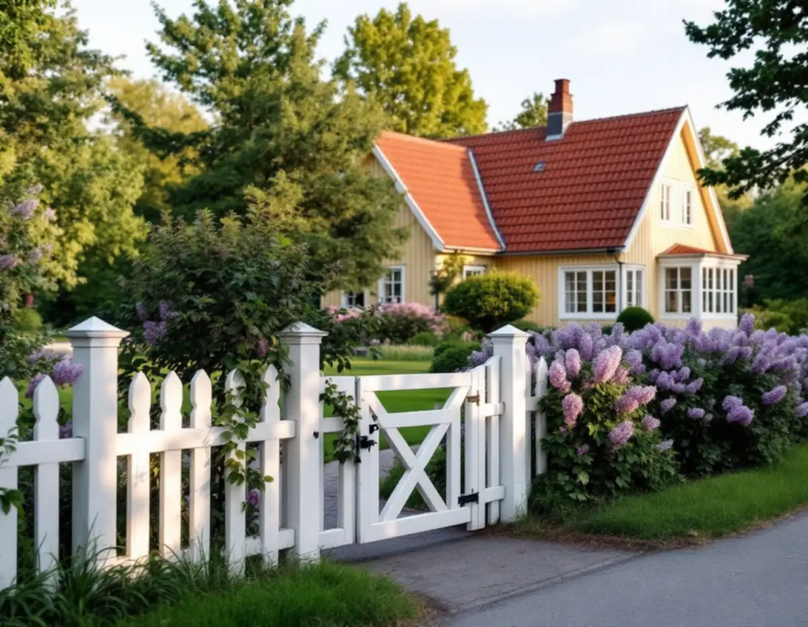
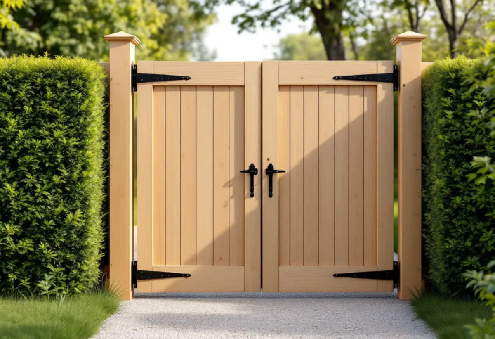

Platsbesök
Vi går längs tomtgränsen, mäter höjder och ser var grinden och infarten ska sitta.
I villastäderna drogs husen in från gatan, och gatorna kantades av klippta häckar eller staket. Ett nytt staket, en grind eller ett plank mot gatan blir därför en del av hela gaturummet. Geal Entreprenad AB bygger staket, grindar, plank och altaner i Älvsjö, Långbro, Långsjö och Herrängen, med gratis platsbesök och skriftligt kostnadsförslag.

Stadens vägledning Varsam utveckling av småhus- och villaområden berättar att järnvägen gav upphov till små stationssamhällen utanför stadens dåvarande gränser. På 1910-talet växte de till större samhällen, och några, till exempel Spånga och Älvsjö, fick status som municipalsamhällen med egen administration och beskattningsrätt.
Stadsplanen för Älvsjö villastad togs fram av Per Olof Hallman enligt samma grundprinciper som hans planer för den tidiga trädgårdsstaden. Fritt liggande hus på tomter om 1 500–3 000 kvadratmeter blev karakteristiskt för villastäderna. När nya planer gjordes för delar av dem under 1930-talet blev tomterna mindre, 700–1 000 kvadratmeter. Husen var som regel indragna från gatan med en grön förgård, och gatorna kantades av klippta häckar eller staket.
I vägledningens tabell är del av Älvsjö både kulturhistoriskt värdefull miljö och ett område med generösa byggrätter, medan delar av Långbro, Långsjö och delar av Herrängen har generösa byggrätter. I basområdet Älvsjö fanns 2025 enligt stadens områdesfakta 214 bostäder i småhus, och 191 av dem var äganderätter.

Stockholms stad beskriver ett plank som en tät och relativt hög konstruktion som skyddar mot insyn eller buller. Ett staket är lägre och glesare och har en avgränsande funktion, och en spaljé består till övervägande del av luft. Vanligtvis behövs inget bygglov för ett glesare staket eller en spaljé, men det beror på höjd, täthet, längd och utformning.
För plank inom detaljplan krävs bygglov om planket blir högre än 1,8 meter och står inom 3,6 meter från en byggnad, eller högre än 1,2 meter längre bort. Ett plank över 1,2 meter ska stå 4,5 meter från gränsen, annars behövs skriftligt medgivande från berörda grannar. Mot gatu- eller parkmark är det oftast kommunen som ska ge medgivandet, och förfrågan skickas till stadsbyggnadskontoret.
Är förutsättningarna för lovbefrielse inte uppfyllda krävs bygglov redan för ett plank som är högre än 1,1 meter. Staden påpekar också att även lägre plank kan kräva lov om de bedöms påverka områdets karaktär, och att utökad lovplikt gäller i särskilt kulturhistoriskt värdefulla byggnader och områden.
Villastaden har enligt vägledningen en brokigare bebyggelse än de egnahemsområden som staden planerade, med individuellt utformade hus från olika epoker. Glasverandor, takkupor, snickarglädje och färgsättning gav stadsdelarna en variation som syns än i dag. Vägledningen råder fastighetsägare att ta tillvara eller återskapa karaktärsskapande material, kulörer, byggnadsdelar och detaljer vid ombyggnader och renoveringar.
För ett staket betyder det att höjd, spjälornas form och färg utgår från huset bakom. Vi ritar stolpar, grind och spjälor efter husets epok och tar med hur grinden ska hänga och stängas.
Ska en ny infart göras räknar vägledningen flera utfarter intill varandra till det som bör undvikas, eftersom det bryter gaturummets gröna karaktär. Planteras en häck vid utfarten bör den enligt staden vara högst 70 cm vid gatukorsningar och utfarter, så att den inte blir en trafikfara.
En altan kräver bygglov på samma höjdgränser som ett plank: 1,8 meter inom 3,6 meter från en byggnad och 1,2 meter längre bort. Lovfria altaner får avvika från detaljplanen så länge den totala ytan inte överstiger 50,0 kvadratmeter. Får altanen tak eller väggar kan det i stället bli en tillbyggnad.
Vägledningen ber också om omsorg när marknivån ändras, om befintlig vegetation, berghällar och stödmurar. Inom detaljplan krävs marklov om höjdläget ändras mer än 0,5 meter. Om husets fasad läser du mer under fasadrenovering i Älvsjö.
Vi går längs tomtgränsen, mäter höjder och ser var grinden och infarten ska sitta.
Stadsmuseets karta och detaljplanen visar om utökad lovplikt gäller.
Höjd, spjälor, stolpar och kulör ritas efter huset och gatan.
Stolpar, staket, grind och beslag redovisas var för sig.
Stolparna sätts i linje med gränsen och grinden hängs och justeras.
Vi går igenom staketet med dig och lämnar mått och ritning.
Skatteverket ger inget rotavdrag för att bygga staket och murar, och inte heller för att reparera eller underhålla dem. Ett staket i Älvsjö betalas alltså fullt ut.
En altan som byggs ihop med huset ger däremot avdrag, liksom reparation av entrétrappor, altaner och tillhörande räcken som sitter ihop med huset. Bostaden ska vara äldre än fem år för om- och tillbyggnad. Avdraget är 30 procent av arbetskostnaden, högst 50 000 kr per person och år och högst 75 000 kr tillsammans med rutavdrag. Material och resor ingår inte, och Geal drar avdraget direkt på fakturan.
Staketets längd och höjd, hur tät konstruktionen är, antalet grindar och hur marken ser ut längs gränsen väger tyngst. Platsbesöket är gratis och du får ett skriftligt kostnadsförslag.
Altan, väggar, dörrar och inredning.
Snickare i Stockholm →Takbyte, takbesiktning och plåtarbeten.
Takläggare i Älvsjö →Långbro, Herrängen och Långsjö.
Takrenovering i Älvsjö →Villatomten, prickmarken och vattnet.
Attefallshus i Älvsjö →Villorna, träbjälklaget och golvvärmen.
Badrumsrenovering i Älvsjö →Byggrätt, gamla planer och planändring.
Byggföretag i Älvsjö →Villastad, nya grannhus och puts på trä.
Fasadrenovering i Älvsjö →Fönster och tilläggsisolering.
Fönsterbyte i Älvsjö →Småspröjs och fönsterluckor.
Fönsterrenovering i Älvsjö →Golvvärme under trägolv i äldre villor.
Golvläggare i Älvsjö →Slipa och ge golvet en ny kulör.
Golvslipning i Älvsjö →Villastad, flerlägenhetsvillor och kök i lager.
Köksrenovering i Älvsjö →Villastad, egnahem och småstugor i Älvsjö.
Målare i Älvsjö →Plåttak för solceller, kupor och verandor i Älvsjö.
Plåtslagare i Älvsjö →Vinden, kupan och byggrätten.
Takbyte i Älvsjö →Bårder och dekor i villastaden.
Tapetsering i Älvsjö →Byggrätt, trädgårdssida och volym.
Tillbyggnad i Älvsjö →